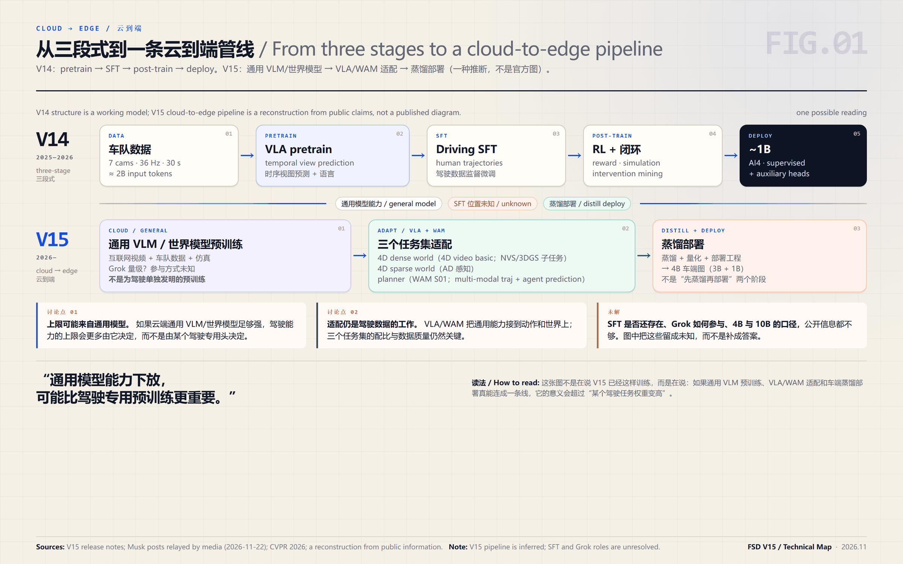
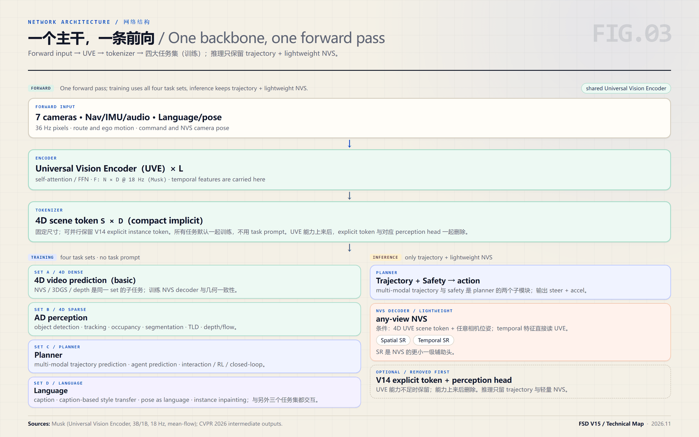
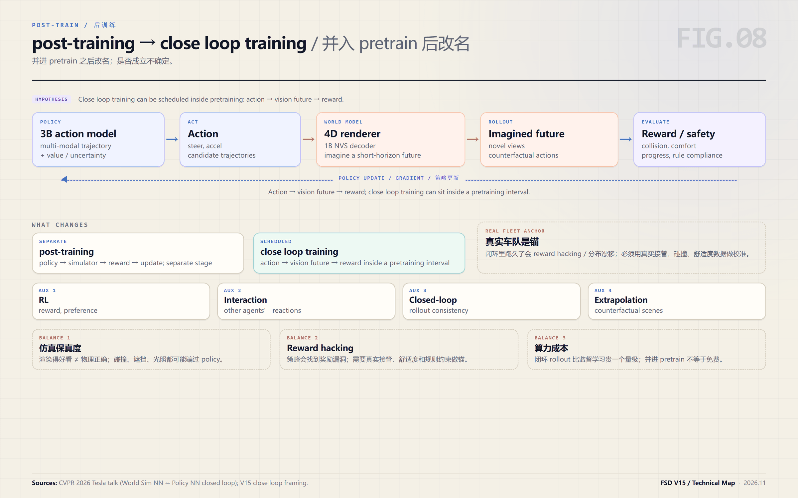
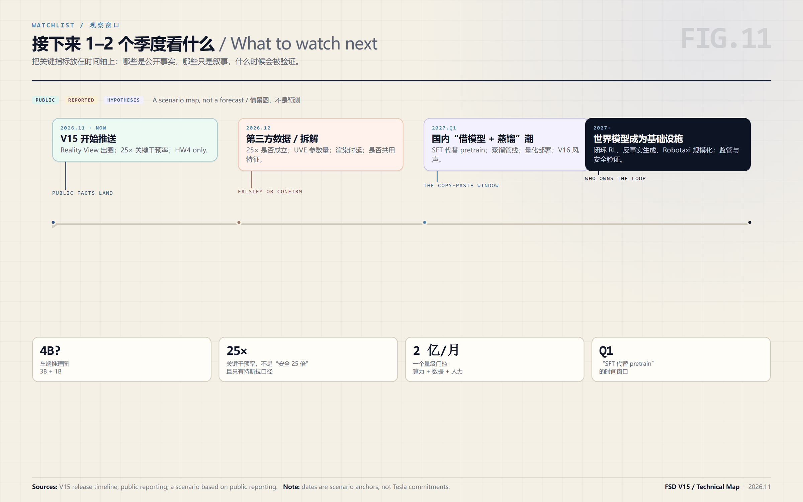

周末 FSD V15 发布之后，这两天大家看了很多视频，下午相互对了一下各自的信息，有一些共识性的结论，管中窥豹看一下 FSD V15 的改进和实现方式。这个文章更加着重于框架设计和实现层，表现层可以自己去 YouTube 看。
本文纯属个人意见，仅作记录和参考，如有雷同纯属意外；如果读者有不同意见，那一定是读者对；如果碰巧实现跟某些公司的方案相同，纯属运气。
一次外部的管中窥豹
材料来自公开信息、Musk 推文的转述和媒体拆解，不包含特斯拉内部信息。
V15 改了什么
视觉编码器升级，Musk 称其为 Universal Vision Encoder（UVE），并在 FSD、Robotaxi、Optimus 之间共用；Reality View 用生成式新视角替代旧的可视化管线；Musk 提到 3B 动作模型 + 1B 渲染模型、18 Hz 特征、8 帧一组、36 fps。这些主要来自 Musk 推文的二手转述，不是官方发布说明。
还有哪些空白
完整的训练 pipeline、SFT（Supervised Fine-Tuning，监督微调）是否仍是独立阶段、4D video 与 NVS 的任务关系、Grok 是否以及如何参与、媒体所说的“10B”到底指什么、NVS 是否真的提升规划指标——公开材料都不足以回答。
通用大模型预训练决定驾驶能力
V15 把通用视觉-语言模型（Vision-Language Model，VLM）预训练、VLA（Vision-Language-Action）/ WAM（World-Action Model）适配和车端蒸馏部署连成一条线。通用大模型预训练决定了 V15 的驾驶能力；它的意义不在“驾驶专用 pretrain 又加了几个任务”，而在通用大模型能力向车端的迁移。
V15 发了什么
驾驶网络的升级
新视觉编码器；路牌、小动物、路面杂物、铁链、坑洼、深积水识别改进；学区/恶劣天气速度控制；测速摄像头前减速；自行车架模式；DMS 支持帽子/墨镜；导航与泊车路线学习。官方称关键干预率提升 25 倍（发布说明报道），但这个口径需要第三方数据验证。
车机上的生成式实景
从车顶虚拟相机实时生成周围世界；不是摄像头回放，也不是游戏引擎贴图；官方称是“novel view synthesis”，由同一个端到端驾驶模型在开车的同时渲染。支持点击目标点、全屏/分屏。
新视觉编码器“用数百万条互联网视频训练”，并在 FSD、Robotaxi、Optimus 之间共用。通用大模型预训练决定了 V15 的驾驶能力。
另一个边界：V15 仍是 supervised 版本，驾驶员全程负责；它和 Robotaxi 同源，但不是无人驾驶。不要把“同源软件栈”误读成“已经无人化”。
从 V14 到云到端：一条可能的管线
V14 采用预训练 → SFT → 后训练三个阶段。三者属于同一个模型，不是三个独立模型。

V14 面对的“维度灾难”
按特斯拉在 ICCV 2025 / CVPR 2026 的公开口径（CVPR 2026 演讲整理）：7 路摄像头 × 36 Hz × 500 万像素 × 30 秒历史，按 5×5 像素 patch 折算，输入约 20 亿 token；再加上导航、100 Hz 运动学、48 kHz 音频。输出只有 2 个 token：转向和加速度。端到端要学的，是 20 亿 → 2 的因果映射。
因此 V14 在中间塞入大量“可解释信号”：3D 占据与流、车辆/行人/骑行者、交通灯与标志、道路边界与车道、限速、交互概率，以及自然语言推理。它们既是监督，也是安全审查的抓手。
V14 的 compact token
按一种工程描述，V14 的 compact token 包含两部分：implicit scene token（隐式场景）和 some explicit instance token（显式实例，如车、VRU、交通灯、车道）。Trajectory head 通过 cross-attention 与这些 token 交互，输出多模态轨迹。
它为什么有效
显式实例可解释、易监督、易做安全规则；SFT 把人类驾驶的“价值判断”压进策略；post-train 用 RL/闭环修 reward。三者各司其职。
它卡在哪里
实例列表是信息瓶颈（“鸡 vs 鹅”：列表丢掉的语义再也拿不回来）；SFT 分布窄；post-train 昂贵且与仿真器耦合；时序视图预测可以用 2D 捷径，不强制 3D 一致。
V14 留下的更重要东西，可能是“中间监督”这条路：让黑箱在输出动作之前，先输出一堆可被检查的东西。V14's real legacy is intermediate supervision, not a particular head.
V15 换了接口：实例列表 → 4D 场景 token，预测下一帧 → 渲染新视角，三段式 → 通用预训练 + 蒸馏部署。
单独看这条管线：VLM 预训练 → VLA/WAM 适配 → 蒸馏部署
把 FIG.01 下半部分拆开，是一条三步链。它不是特斯拉官方流程图，而是把公开说法、Musk 推文的转述和工程约束放在一起的一种读法；每一步都还有不确定项。
- 视觉-语言模型（VLM）预训练（云）：通用视觉、语言、视频和世界模型能力。参数规模、数据配比、是否来自 Grok 体系，公开信息都不够；一种推测是 Universal Vision Encoder（UVE）本身就是 Grok 的一部分，也可能经过多级蒸馏。
- VLA / WAM 适配：VLA 是 Vision-Language-Action，把视觉/语言接到动作；WAM 是 World-Action Model，对应 planner 任务集 S01，包含 multi-modal trajectory prediction、agent prediction 等子任务。适配层决定通用能力能不能变成驾驶行为。
- 蒸馏部署（车端）：把云端教师压成 4B 车端图（约 3B 动作 + 约 1B 渲染），再做量化、剪枝、算子融合和 AI4 部署。蒸馏和部署是同一个环节，不是“先蒸馏、再部署”两件事。
这条链的每一段都有空白：UVE 与 Grok 的关系、媒体所说 10B 的口径、SFT 是否仍独立、4B 是否就是完整车端图。图中用问号和虚线，是为了保留这些空白，而不是把它们补成答案。
一个编码器，两条解码路径？
以下结构来自 Musk 推文的二手转述和媒体拆解，不是特斯拉官方架构图。公开信息能支持的只是几件事：Universal Vision Encoder（UVE）共享、约 3B 的动作模型 + 约 1B 的渲染模型、18 Hz 特征。我们用它来解释一种可能的运行方式，但不把它当成已证实的训练图。

把这条前向展开成网络结构，就是下面的“两座塔”：3B 动作塔负责规划与控制，1B 渲染塔负责新视角。

UVE：Universal Vision Encoder，通用的“视觉节拍”
UVE（Universal Vision Encoder）以 18 Hz 输出特征序列，FSD、Robotaxi、Optimus 共用同一个编码器。18 Hz 这一频率来自 Musk 推文的二手转述，不是发布说明。它用数百万条互联网视频做通用视觉预训练，再在车队数据上对齐驾驶。一个合理的推测是：编码器因此不再只对“驾驶相关物体”敏感，而是对通用世界（材质、光照、动物、杂物、遮挡）更敏感。
Fork：如果共享特征成立，为什么重要
按二手转述，3B 动作模型和 1B 渲染模型都从 Universal Vision Encoder（UVE）特征 fork。如果这个描述成立，渲染器就不是拿一段独立视频去“贴图”，而是用同一份场景表征去条件生成新视角。这样一来，渲染损失可能反传回 UVE，迫使特征同时满足两件事：
- 对动作有判别力：该影响刹车的细节不能丢；
- 对渲染有一致性：遮挡、深度、动态、光照要能在新视角下自洽。
如果共享表征成立，它的价值可能不只是多一个输出，而是多一个约束。
1B 渲染器：conditional mean-flow 是什么
按二手转述，渲染器是一个 1B 的 conditional mean-flow 模型（mean-flow 是 flow matching 的变体，学习区间平均速度场），以 UVE 特征为条件，输入“上一帧 + 噪声”，输出当前视图。它不需要从零重建整帧，而是预测变化量；因此 token 数、NFE 和算力都能压下来。
调度上，Musk 的推文转述提到 8 帧一组、目标 36 fps、摊到 4 个 UVE 周期。玻璃到玻璃延迟没有可靠的公开数字。
“½ TRIP”是一个 TRIP 加速器的一半，不是“半颗 AI4”。它占整颗芯片多少算力，公开信息不足以计算。能说的只是：它吃的是剩余算力，不是主控制环的预算。
4B、10B、Grok：三个不同层级的东西
| 层级 | 规模 | 证据 | 说明 |
|---|---|---|---|
| 车端动作模型 | 3B | Musk 帖文 | 输出轨迹/控制，带辅助头。 |
| 车端渲染模型 | 1B | Musk 帖文 | NVS decoder，conditional mean-flow。 |
| 车端推理图合计 | 4B | 相加 | 3B + 1B；是否还有别的头/模型未说明。 |
| 媒体所称“10B” | ~10B | 媒体报道 | 范围不明，且与 3B+1B 不一致。本文不把它当作教师模型。 |
| Grok / 通用大模型 | 远大于 10B | 量级判断 | 具体参数未公开；是否参与、如何参与 V15 训练，公开信息不足。 |
| 完整系统 | 未知 | 待验证 | 若还有数据引擎、仿真器、其他专家，则“总参数”没有意义。 |
所以，比较稳妥的读法是：4B 是车端推理图；10B 是媒体口径，范围不明；Grok 是另一个量级。把 10B 当成 Grok 或云端教师，目前没有依据；把 4B 当成“V15 的全部”，也忽略了云端和工具链。
可能不是驾驶专用预训练
V15 的变化不在“自动驾驶又多了几个预训练任务”，而在通用大模型（VLM）预训练：通用大模型预训练决定了 V15 的驾驶能力，并通过 VLA/WAM 适配和蒸馏部署进入车端。
VLM 已经在云端做世界模型
视频生成、4D 场景生成、世界模型这些能力，在通用 VLM/视频模型里已经存在，并不是自动驾驶独有的新任务。对自驾来说，更难的环节是把这些能力变成可车端部署、可闭环验证、可安全兜底的东西。特斯拉如果做成了，价值不在“发明了 4D video”，而在“把通用模型的预训练能力接进了车端”。
VLA 与 WAM 可能是同一条线的两端
VLA 强调视觉/语言到动作的映射；WAM 强调世界模型与 planner（WAM 的 S01）。两者过去像两条路线，但在“通用预训练 → 车端蒸馏部署”的框架里，它们更像是同一个模型的不同接口和 loss：VLA 负责把语言/视觉意图变成动作，WAM 负责预测世界和评估动作。V15 可能展示的是这条线的合流，而不是两个独立范式的竞争。
通用能力在云端
VLM/视频/世界模型提供视觉、物理常识和生成能力；这部分不是为驾驶单独发明的。
VLA/WAM 做适配
把通用表征接到驾驶动作、轨迹和世界预测上；驾驶数据在这里起作用。
蒸馏部署到车端
蒸馏、量化、部署工程是同一个环节的不同部分；目标是把云端能力压进 4B 车端图。
Grok 在哪一层？
Grok 是远大于 10B 的通用大模型；一种待验证的推测是 Universal Vision Encoder（UVE）本身属于 Grok 体系，可能经过多级蒸馏。公开信息没有说明 Grok 与 FSD 的具体连接方式。
SFT 到底还在不在？
公开信息不足以判断 SFT 是否仍是独立阶段。更稳妥的说法是：如果 planner 任务已经进入通用预训练，那么在高质量驾驶数据上的最后一段监督训练，可能退化成一段“退火”或对齐；但这是推断，不是事实。把“V15 去掉了 SFT”当成结论，目前证据不够。
对自动驾驶的冲击来自通用大模型预训练能力的下放，而不是自动驾驶自己发明了一套能改变 LLM 训练的预训练方法。
4D video prediction 是 basic 任务，NVS 是它下面的子任务
一种工程划分是：4D video 不是 V15 新发明的任务，通用 VLM/视频模型早就在做；对自驾模型来说，它更像是 basic task。Novel View Synthesis（NVS）不是与它并列的“新核心”，而是 4D dense 任务集里训练 4D video prediction 的子任务；重建、渲染、3D Gaussian Splatting（3DGS）、depth 都可以归到这个任务集。这里把这一类称为 4D dense world。

为什么 NVS 能帮到 4D video prediction
时序视图预测（用过去帧预测下一帧）有一个天然的 2D 捷径：只要学会“复制 + 局部变形”，就能在多数帧上把 loss 降得很低，而不需要 3D 理解。NVS 不一样：给定一个没见过的相机位姿，要求渲染出该视角的画面。要做得对，模型必须隐式地学会深度、遮挡、物体背面、动态一致性。因此，它是一种更“硬”的辅助监督。
4D video prediction
预测未来的视频/场景演化；这是 4D dense world 的主任务，不是 V15 独有的新任务。
NVS / reconstruction / 3DGS / depth
通过新视角、重建、几何监督，逼表征编码 3D/4D 一致性；它们是训练手段，不是最终产品。
数据闭环：从车队日志到 NVS 训练对
- 车队日志：7 路摄像头、36 Hz、30 秒 clip；每帧带 ego pose 与相机外参。
- 轨迹 / 位姿：自车轨迹和相机位姿是 NVS 的条件；它们可以离散成 token，也可以文本化。
- 3DGS 重建：沿轨迹做动态感知的高斯重建；特斯拉公开讲过“生成式 3D Gaussian”，重建约 220 ms（ICCV 2025 解读）。
- 新视角渲染：在空间（左/右/上/下）和时间（前/后几帧）上采样虚拟相机，渲染 RGB、depth、segmentation、flow。
- 训练对：把“条件（位姿/语言）+ 目标（新视角）”喂给 UVE/scene token，作为 4D dense world 的辅助任务。
这条闭环的经济学很强：一次采集，多次监督。同一段 30 秒日志，不再只产出一条“人类驾驶轨迹”，而是可以产出成百上千个 NVS 训练对。
Pose as language
有工程讨论提到，“4D video NVS 中 pose 本身是 language input”，这是很关键的一点。相机位姿可以被编码成文本/离散 token，例如“把相机向前移 3 米、抬高 1.5 米、向左看 20°”。这样一来，同一个 scene token 同时被两种条件查询：
- 动作条件：自车接下来怎么走；
- 相机条件：从哪个虚拟视角看这个世界。
语言不是“解释”，而是一种通用的条件接口。它让 NVS、视频生成、场景编辑、甚至反事实 rollout 共享同一套条件语法。
“local world model”不是“云端 simulator”
1B 渲染器是一个局部世界模型：短时域、条件生成、视角一致。它可以在车上实时跑，但它不是那个可以无限 rollout、做对抗场景、做闭环评估的云端神经模拟器。两者是同一个技术家族的不同规模：
| 车端 1B renderer | 云端 world simulator | |
|---|---|---|
| 时域 | 8 帧 chunk / 短时 | 长时域 rollout |
| 条件 | Universal Vision Encoder（UVE）特征 + 上一帧 + 位姿 | 状态 + 动作 + 场景编辑 |
| 用途 | Reality View、NVS 监督 | 闭环评估、RL、对抗样本 |
| 算力 | ½ TRIP / UVE frame | 数据中心级 |
GS 重建质量、动态物体、遮挡区域、光照变化都会影响 NVS；模型可能在遮挡区“编”出不存在的细节。NVS 指标好看，不等于 planning 指标变好——这是 V15 需要证明、但目前还没有公开证明的事。
Compact token：从“实例列表”到“4D 场景”
V14 的 compact token 是“implicit scene + explicit instance”。一种推断是 V15 把重心移到 implicit scene，把 instance 从“接口”降级为“可选查询”。这不是审美选择，而是 NVS 逼出来的结果。

V14：实例是接口，也是瓶颈
显式实例的好处是显然的：可解释、可监督、可做安全规则、可做可视化。但它同时是一个信息瓶颈。感知输出“鸡”和“鹅”的框，规划需要知道“鸡在过马路（要等）”和“鹅在路边发呆（可绕）”；一旦这个语义在实例列表里丢了，后面的网络再强也拿不回来。
而且，实例列表是变长的：不同场景有不同数量的车、人、交通灯。Trajectory head 对它做 cross-attention，计算图会随场景变化，工程上更难做确定性时延。
V15：场景是接口，实例是查询
V15 的方向更可能是：以一个固定尺寸的 4D scene token 为主接口，把 instance 变成从 scene token 里“query 出来”的可选头。这样做有三个直接收益：
- 表征更密：4D NVS 迫使 scene token 编码几何、外观、动态；规划拿到的不是一个“物体清单”，而是一个可查询的世界。
- 计算更稳：固定尺寸张量的 attention 更便宜、更可预测；没有变长列表，时延更可控。
- 推理可裁剪：辅助头（感知、语言、可视化）可以在车端关掉或降频，只保留主线和渲染。
“弱化 instance”不等于“删掉 instance”
更严谨的说法是：instance 从“接口”降级为“查询”。训练时仍然需要实例监督（检测、跟踪、分割、占据），否则安全验收过不了；但这些头可以从 scene token 解码，而不是作为独立 token 集合参与规划。推理时，它们可以被裁剪或异步执行。
这会带来一个可观察的预测：V15 的车机可视化里，传统“框 + 图标”会减少，更多是稠密的、生成式的场景；但这不等于感知头消失了，只是它不再占据规划接口的中心。
固定尺寸 scene token + 直接 cross-attention，比“变长实例列表 + 多级融合”更容易做 kernel fusion、cache 复用和确定性时延。渲染器还可以被调度到主控制环的剩余算力上——这正是“½ TRIP”能成立的前提。
三大任务集：dense world、sparse world、planner
一种工程划分把自驾相关任务压成三个任务集：4D dense world（4D video prediction 是 basic 大任务，NVS/3DGS/depth/重建/渲染是它下面的 dense WM 子任务）、4D sparse world（AD 感知任务集）、planner（WAM S01；包含 multi-modal trajectory prediction、agent prediction 等子任务）。语言/VLM 更像接口和调试工具，不单列为任务集。

三个任务集的分工
4D video prediction
4D video prediction 是这个任务集里的 basic 大任务；NVS、3DGS、depth、重建、渲染都是它下面的 dense WM 子任务。它并非 V15 新发明，通用 VLM/视频模型已有类似能力。
AD 感知
检测/跟踪、交通灯/标志、实例/语义/占据分割、depth/flow 等，构成 sparse world 任务集。它是 AD 最成熟的监督来源，也是 dense world 与 planner 之间的稀疏世界接口。
WAM S01
planner 是 WAM S01 对应的任务集；其中包含 multi-modal trajectory prediction、agent prediction，以及交互、RL、闭环等子任务。它是最终影响驾驶行为的任务集。
语言不单列为主线。它更像是条件接口（pose as language、指令、CoT）和调试/数据工具（caption、检索、失败归因）。把它单列成“dense VLM 任务”容易模糊主线，也会让任务分类看起来比实际更整齐。
一段数据，三类监督
三个任务集能放在一起训，前提是 data-task pairing 做得足够细。同一段 30 秒 clip 可以同时产出：
| 监督 | 数据来源 | 标签/条件 | 用途 |
|---|---|---|---|
| 4D video prediction | 车队 clip + 互联网视频 | 未来帧、时间偏移、场景演化 | 4D dense world 任务集的 basic 大任务 |
| NVS / 3DGS / depth | 车队 clip + 3DGS 重建 | 新相机位姿、RGB/depth/seg | 4D dense world 任务集下的 dense WM 子任务 |
| 4D sparse world | 车队 clip + 自动/人工标签 | 框、track、mask、occ、depth | AD 感知任务集；安全与蒸馏监督 |
| Planner | 人类驾驶轨迹 + 仿真 | 多模态未来、agent 交互、reward、接管 | WAM S01 任务集：multi-modal trajectory prediction + agent prediction |
| 语言 / VLM | VLM 自动 caption + 人工审核 | 场景描述、决策理由、QA | 接口、检索、调试，不作为任务集 |
把三个任务集放回训练系统，就是下面这张框架图。它画的是一条可能的链路：通用 VLM/世界模型预训练 → 三个任务集适配 → 蒸馏部署到车端；SFT 是否仍是独立阶段，公开信息不足，图中用虚线表示“不确定”。

顺序与权重
一个可能的过程是：
- 通用 VLM/世界模型 warm-up：互联网视频、通用 4D/video prediction，建立世界先验；
- 4D dense + sparse：加入车队 4D video、NVS/3DGS/depth、AD 感知标签；
- Planner：加入多模态轨迹、交互、闭环/RL 课程；
- 蒸馏部署：蒸馏、量化、部署工程作为一步，把能力压到车端。
顺序不是固定的；也可以全程混合、只调权重。SFT 是否还作为独立阶段存在，公开信息不足，不应把它当作既定事实。
难点
三个任务集会互相抢容量：4D dense 吃 decoder 和算力，sparse world 拉高分辨率，planner 要求低时延。难点在于任务平衡与评估：如果 NVS 指标涨了、planning 指标没涨，它仍然只是辅助任务。
不管任务怎么合并，最终影响驾驶的仍然是 planner。4D dense world 是 basic/辅助，4D sparse world 是感知接口；判断 V15 成败的指标仍是干预率、舒适度、通行效率和闭环安全，不是渲染画质。
后训练放在哪：可能被吸收，也可能仍独立
有一种判断是：如果 4D video generator 已经能当 pretrain simulator，post-train 也可以吸进 pretrain，RL / interaction / closed-loop / extrapolation 都作为多模态轨迹预测的辅助任务。这个方向合理，但边界比“吸收”更模糊。

V14 的 post-train 为什么独立
因为仿真器和策略是两套东西：策略在真实数据上做模仿学习，然后在仿真器里做 RL/闭环评估；仿真器负责生成状态，策略负责动作，两者通过接口交换。这个接口既是工程边界，也是组织边界。
一种可能是：如果 V15 的 4D 渲染器能条件于动作生成反事实未来，它就不只是“回放”，而可能成为“可交互的局部模拟器”。这时，策略或许可以在同一个模型家族里 rollout，RL/交互/闭环/外推也就可以作为辅助任务，和主线的轨迹预测一起训练。这只是可能，不是已确认的设计。
“吸收”更准确的说法：课程化
更准确的可能说法是“post-train 变成 pretrain 后期的一段课程”，而不是“post-train 消失了”。区别在于：
- 数据：从“离线状态-动作对”变成“在线/半在线 rollout + 真实车队锚点”；
- 目标：从“模仿”变成“模仿 + reward + 安全约束 + 交互一致性”；
- 调度：不再是“先 pretrain 再 post-train”，而是“在 pretrain 的某个区间加大 RL/闭环权重”。
如果这个方向成立，V15 的“训练范式”确实是两段式；但“post-train”作为一个职能仍然存在，只是被重新分配到了 pretrain 的课程和 distillation 的微调里。
四个硬约束
仿真保真度
渲染得好看不等于物理正确。碰撞、遮挡、光照、其他交通参与者的反应，都可能骗过 policy。
Reward hacking
策略会找到奖励漏洞。必须用真实接管、碰撞、舒适度、规则约束做锚，不能只靠渲染器里的 reward。
分布漂移
闭环里跑久了，策略会进入自己生成的状态分布；需要真实车队数据不断校准。
算力成本
闭环 rollout 比监督学习贵一个量级。“吸收”不等于免费，可能只是把账单从 post-train 移到 pretrain。
如果 4D 生成器只能“回放”训练时见过的轨迹，它就不是 simulator，只是 renderer；如果它能接受反事实动作（“如果此时左转，世界会怎样”）并生成物理上合理、时序一致的未来，它才有资格成为 post-train 的载体。这是 V15 最值得观察的技术分水岭。
蒸馏部署：一个环节，不是两个阶段
有一种工程说法认为，蒸馏和部署在工程上是一步；按这个划分，把云端能力压到 4B 车端，蒸馏、量化、剪枝、算子融合、时延工程是同一件事的不同环节，而不是“先蒸馏、再部署”两个独立阶段。

为什么是“深 DiT + 低分辨率”
有工程讨论提到，“堆叠的 DiT 深度还是非常深，但是分辨率不大；超分的外挂不难，时序超分也不难”。这与“把容量花在语义和时序一致性上，把像素交给产品层”的思路一致：
- 语义优先：场景理解、遮挡关系、动态一致性需要深网络；
- 像素后置：UI 分辨率可以通过空间超分放大；帧率可以通过时序超分/插帧补足；
- 算力可控：生成低分辨率 + 外部超分，比端到端生成高分辨率便宜得多，也更容易做确定性时延。
这些是不改变模型训练的外挂，但决定用户看到的是“糊的 4B”还是可用的实景。产品化的差距，很多时候就在这些细节上。
公开材料没有给出可靠的玻璃到玻璃延迟。能引用的只有二手转述里的 18 Hz 特征、8 帧一组和 36 fps 目标；它们不是官方发布说明里的指标。
蒸馏部署包含什么
如果 V15 的路径是“通用预训练 → 车端蒸馏部署”，那蒸馏部署至少包括三层：
- 能力/表征：Universal Vision Encoder（UVE）与 scene token 的中间特征，让学生学会“看世界的方式”；
- 任务结构：三个任务集的权重、data-task pairing、训练顺序；
- 部署：量化、剪枝、算子融合、确定性时延。
因此，“复用 pretrain 的 task/data 配比”很重要：蒸馏部署不是从零教一个 4B 学生，而是让它在一个已经验证过的任务分布里，模仿云端模型的行为和表征。云端模型具体多大、是不是 Grok、是不是 10B，公开信息都不够；本文不在这里下结论。
能力蒸馏
云端 → 学生：特征、logits、渲染、轨迹、不确定性。目标是“会同样的任务”，不是“参数更小”。
表示量化
FP32 → FP16/INT8/FP8，QAT（Quantization-Aware Training）、剪枝、算子融合。目标是“同样的能力，更低的带宽/功耗”。
产品层的四个外挂
- 空间超分：把低分辨率渲染放大到 UI 分辨率；
- 时序超分/插帧：把 chunk 之间的跳变补平，维持 36 fps 的观感；
- 遮挡补全：对摄像头盲区做合理推断，而不是简单回放；
- UI 合成与降级：轨迹箭头、可点击目标、地图叠加；渲染失败时的安全回退。
这些外挂不改变模型训练，但改变产品体验；它们也是“为什么特斯拉能先做出来”的一部分——不是算法 alone，而是算法 + 芯片 + 座舱 + 产品团队一起调。
4B 更像一个被任务结构压过的模型，而不是单纯的小模型。它的能力上限由教师和任务配比决定，下限由蒸馏/量化/时延工程决定。把 4B 当成“缩小版云端模型”会低估蒸馏部署的作用；把 4B 当成“另一个云端模型”会低估部署约束。
产业影响：门槛可能移到云和蒸馏部署
按这种判断，竞争点会从“有没有一个端到端模型”，转向两件事：能不能拿到或训练足够强的通用模型，能不能把它蒸馏部署到车端并稳定运行。

2 亿元/月买的是什么
“月投入 2 亿元”是业内一种量级判断，不是财报科目，也不是行业标准。它大致对应四块支出：
算力
千卡到万卡级集群的折旧或租赁、网络、存储、训练框架与容错；预训练的账单主要在这里。
数据与标注
车队回传、清洗、自动标注、人工审核、3DGS 重建、仿真场景生成；数据引擎是容易被低估的部分。
人才
大模型预训练、世界模型、驾驶规划、芯片协同、评测。跨学科团队，而且要能一起工作。
评测与闭环
神经模拟器、闭环 RL、安全验证、监管沟通。没有评测，预训练只是“更大”，不一定是“更好”。
三条路线
路线 A：全栈通用预训练。自己拥有基础模型、VLA、世界模型和蒸馏部署管线。上限最高，固定成本也最高。特斯拉是代表；如果华为或小米能把自家大模型与 VLA 合并，也有机会。但“有模型”不等于“有驾驶数据、安全验证和组织协同”，这不是自动成立的。
路线 B：借大模型 + SFT + 蒸馏部署。用外部 LLM/VLM/世界模型，SFT 代替完整的预训练，再做蒸馏/量化。这是大多数国内车企和具身智能公司更现实的动作：不需要重建预训练基建，先把蒸馏部署管线跑通。代价是模型不可控、授权/合规风险、能力上限受制于人。
路线 C：垂直数据/场景。区域数据、长尾场景、监管关系、成本控制。在 L4 限定场景或城市仍然能形成壁垒；但如果基础模型代差拉大，场景壁垒的作用会下降。
蔚小理、华为、小米：把叙事和事实分开
“御三家”指蔚小理。三家的投入都很大，但路径不同：小鹏对外释放了端到端/VLA 的正向信号；蔚来刚发布新一代方案；理想的 pretrain 方式与“通用预训练”不完全同构，更强调与量产闭环/世界模型的结合。这些是市场叙事，不是审计数据，本文不把具体金额和排名当事实。
华为和小米的潜在优势在于“自家大模型 + 自家车/芯片/渠道”的组合。如果它们能把通用大模型与 VLA 结合，再复用云端训练/蒸馏部署管线，对只做驾驶算法的公司会形成很大压力。但难点不只在模型，还在驾驶数据闭环、功能安全、组织协同和监管。任何一环掉链子，都可能是“看起来能打，落地很慢”。
VLA 与 WAM 可能是同一条线
VLA（Vision-Language-Action）强调语言作为输入/输出，WAM（World-Action Model）强调世界模型 + 动作。两者过去像两条路线，但在“通用预训练 → 车端蒸馏部署”的框架里，它们更像同一个模型的不同接口和 loss：
- 语言仍然是接口（pose as language、CoT、caption）；
- 世界模型不是外挂，而是共享表征的一部分（NVS 渲染器）；
- 动作不只靠模仿，也靠世界模型里的 rollout/奖励来优化。
所以“VLA 与 WAM 归并”更准确的说法是：它们可能是同一个模型的不同 loss/接口。这也是为什么“拿别人的大模型 + SFT 代替完整预训练 + 蒸馏部署”会成为一些公司接下来一个季度的现实选择——不是因为它最优，而是因为它最快。
公开证据支持的是：有蒸馏部署管线、有 4B 车端图、有 Robotaxi→HW4 的媒体报道。
对大多数公司，现实策略不是“追 2 亿/月的预训练”，而是“选一个够强的基础模型，把 SFT 和蒸馏部署做到极致，同时用垂直数据守住场景”。这会拉大与特斯拉的上限差距，但可能先把产品做出来。风险是：当对手用通用世界模型做 zero-shot 长尾时，垂直数据的边际价值会下降。
可证伪的检查点
接下来 1–2 个季度可观察的检查点如下。

| # | 检查点 | 如果成立 | 如果不成立 |
|---|---|---|---|
| 01 | Universal Vision Encoder（UVE）/ 18 Hz 的出处：能否找到 Musk 原帖或官方文档？ | 这些技术细节有更硬的依据。 | 仍是二手转述，只能当临时口径。 |
| 02 | 4B / 10B / Grok 的 scope：10B 到底统计什么？是否被误当成 Grok？ | 模型规模层级可以说清楚。 | “10B 教师”的说法不成立，应删除。 |
| 03 | SFT 是否仍是独立阶段：V16 的 pipeline 会不会显示它？ | 可以判断 SFT 是被吸收还是保留。 | SFT 仍在，“阶段塌缩”只是部分成立。 |
| 04 | NVS 是否只是 4D video prediction 的辅助：特斯拉是否这样描述？ | 三个任务集划分更接近真实训练。 | NVS 是主任务或产品功能，不是辅助。 |
| 05 | 是否存在云到端管线：云端和车端是不是同一模型家族？ | 上述判断得到支持。 | 其实是两个模型，“云到端”只是叙事。 |
| 06 | 25× 的基线与第三方数据：关键干预率是否可复现？ | V15 是真实的能力跃迁，不只是视觉升级。 | 回到更小的改善幅度，V15 被高估。 |
| 07 | 国内是否出现蒸馏部署管线招聘/论文/发布：借模型 + SFT + 蒸馏部署是否成潮？ | 上述产业判断成立。 | 大家仍在自研完整预训练，或路线更分散。 |
| 08 | 华为/小米是否合并大模型与 VLA：有没有统一的车端模型？ | 竞争压力从叙事变成现实。 | 组织/数据/安全壁垒比模型更难。 |
结构性变化
通用模型能力和蒸馏部署成为主轴；驾驶专用预训练单独的重要性下降；拿不到强模型或蒸馏部署管线的公司会更快落后。
一次体验升级
Reality View 很酷，但驾驶能力提升有限；行业回到数据闭环、成本和安全验证的竞争，通用预训练叙事降温。
术语表
名词与数字
| 名词 / 数字 | 出处与可信度 | 它可能指什么，容易误读在哪 |
|---|---|---|
| Universal Vision Encoder（UVE） | Musk 推文转述 | Universal Vision Encoder，通用视觉编码器。负责把连续摄像头画面压成特征，并在 FSD、Robotaxi、Optimus 之间共用。发布说明只写了“vision encoder”，没有展开全称。 |
| 18 Hz | Musk 推文转述 | Universal Vision Encoder（UVE）的特征更新频率，不是相机帧率，也不是最终画面帧率。Musk 同时提到每次生成 8 帧、目标 36 fps，并把生成摊到 4 个计算周期。 |
| 3B + 1B / 4B | Musk 推文转述 | 约 3B 的驾驶动作模型 + 约 1B 的渲染模型，合计约 4B，是车端推理图。该拆分来自推文转述，仍建议等官方文档。 |
| 10B | 媒体报道 | 有媒体称 V15 参数从约 1B 增至约 10B，但没有说明统计范围，且与 Musk 的 3B+1B 不一致。本文只把它当作媒体口径，不当作教师模型，也不和 Grok 混为一谈。 |
| Grok | 待确认 | Grok 是另一个量级的通用大模型，远大于 10B。按一种待验证的推测，Universal Vision Encoder（UVE）可能属于 Grok 体系，也可能经过多级蒸馏；公开信息没有给出参与方式。 |
| 25× 关键干预率 | 官方口径 | 是“critical intervention rate”相对 V14 的改善，不是“安全性 25 倍”，也不是“提升 25%”。特斯拉没有公布 V14 的基数和统一定义。 |
| 8 帧 / 4 个周期 | Musk 推文转述 | 渲染按 chunk 生成，摊到 4 个 Universal Vision Encoder 周期；Musk 提到目标 36 fps。这些都是二手转述；玻璃到玻璃延迟没有可靠公开数字，本文不写具体毫秒数。 |
| ½ TRIP 算力 | Musk 口径 | 是“一个 TRIP 加速器的一半”，不是“半颗 AI4”。它占整颗芯片多少比例，公开信息不足以计算。 |
| HW4 only | 官方口径 | V15 只支持 AI4/HW4；HW3 继续走 v14 Lite 分支。 |
表中数字的出处：Universal Vision Encoder（UVE）、18 Hz、3B+1B、8 帧、36 fps、½ TRIP 来自 Musk 推文的新浪转述（2026-11-22）；10B 来自 TechWeb 报道（2026-11-23）；25× 来自搜狐/环球网对发布说明的报道（2026-11-22）；HW4 支持范围来自同一组报道。它们都不是特斯拉官方技术文档的逐字引用。
VLA
Vision-Language-Action。以视觉为输入、语言为中间/输出、动作为目标的模型范式。
WAM
World-Action Model。以世界模型为核心、动作为输出的范式；与 VLA 正在合流。
NVS
Novel View Synthesis，新视角合成。给定新相机位姿，渲染该视角的画面；4D NVS 还要求时间一致。
3DGS
3D Gaussian Splatting。用大量高斯椭球表示场景，可微、渲染快、支持动态物体。
DiT
Diffusion Transformer。用 Transformer 做扩散/流匹配去噪主干的生成模型。
Mean-flow
Flow matching 的变体，学习区间平均速度场；用更少 NFE 完成生成，适合车端低时延。
Compact token
V14/V15 的中间表征接口；V14 含 implicit scene + explicit instance，V15 更偏 4D scene token。
SFT
Supervised Fine-Tuning。在高质量驾驶数据上做监督微调；V15 可能把它吸收为 pretrain 的退火项。
RL / 闭环
强化学习与闭环评估。用仿真/世界模型 rollout，按 reward 和安全约束优化策略。
Distillation
蒸馏。把大模型教师的能力（特征、输出、任务结构）迁移到小车端学生。
QAT / 量化
Quantization-Aware Training。训练时模拟低精度，部署时转 INT8/FP8，降低带宽/功耗。
TRIP
特斯拉 AI4 芯片中的神经网络加速核；Musk 说 Reality View 用“半个 TRIP”，不是半颗 AI4。
MPCI
Miles Per Critical Intervention，平均多少次关键干预行驶的里程；V15 的 25× 就是相对 V14 的这个指标。
来源与说明
主要来源
- Tesla FSD V15 推送与发布说明综合报道，搜狐/环球网，2026-11-22：链接
- Reality View 生成式实景与算力说明，中关村在线，2026-11-23：链接
- FSD V15 视觉编码器 / Reality View 深度拆解，OFweek，2026-11-23：链接
- Musk 推文转述：UVE 全称 Universal Vision Encoder、18 Hz、3B/1B、8 帧 / 36 fps、½ TRIP，新浪/微博，2026-11-22：链接
- Tesla CVPR 2026 演讲全文与解读（通用机器人基础模型、中间输出、World Sim NN），OFweek，2026-06-05：链接
- 从 Tesla ICCV 2025 分享看端到端（2B token、3DGS、语言推理），人人都是产品经理，2025-12-22：链接
- UVE / 3B / 1B fork 与 18 Hz、8 帧 chunk 的公开转述整理，微博，2026-11-22：链接
- Musk 回复“3B + 1B”截图与讨论，微博，2026-11-22：链接
- V15 “10B 参数 / 25× / 架构重构”综合报道，TechWeb，2026-11-23：链接
- V14.3.5 统一模型与 Robotaxi→HW4 蒸馏报道，网通社，2026-07-21：链接
- FSD V15 刷屏与 25× / 产业影响分析，搜狐汽车，2026-11-23：链接
关于 10B：第 8 条是媒体口径，与 Musk 的 3B+1B 不一致；它只应被当作“范围不明的报道”，不是教师模型。Grok 是另一个量级的通用模型，具体参数未公开。
附录 A：11 条判断
11 条判断列在文末 附录 A，逐条给出评估。与公开信息冲突的地方（如“Grok 直接共同训练”“10B vs 4B”）按统计范围拆开；没有公开证据的地方（如“去掉 SFT”“弱化 instance token”“超分外挂”）标为推断。
引用与更新
引用格式：管中窥豹 FSD V15, 2026-11-23, v1.2。待补的公开信息包括：UVE 的预训练数据配比、4D video / NVS 的训练条件、compact token 的实际结构、蒸馏部署管线的配置。
版本：v1.2 · 2026-11-23 · 中文/English · 11 张图 · 单文件 HTML。
声明：本文不构成投资建议；公司/路线判断为作者分析，不代表任何公司官方立场。
附录：11 条判断的校验表
11 条判断逐条列出，给出评估和对应章节。
| # | 一种判断（蒸馏部署） | 评估 | 证据 / 说明 |
|---|---|---|---|
| 01 | Grok 与 FSD 一起训练；V14 的 VLA pretrain 变成 V15 的 general pretrain | 待验证 通用预训练方向可讨论；“Grok 权重共同训练”无公开证据 | UVE（Universal Vision Encoder）用互联网视频、跨 FSD/Robotaxi/Optimus 共用，来自 Musk 推文的二手转述；Grok 是另一个量级的模型，参与方式不明。见 §04。 |
| 02 | SFT 依然使用 driving 数据 | 部分成立 数据很可能仍在使用；是否独立成阶段未知 | V15 发布说明仍强调车队数据与驾驶行为改进；但“SFT 是否消失”没有公开 pipeline 可证。见 §04。 |
| 03 | 4D video generation 权重增强；basic 能力有 local world model，支持 NVS；训练数据是沿轨迹的 GS 重建 | 方向合理 4D video 是 basic；NVS 是 4D dense 任务集下的子任务；数据配方是推断 | 官方明确说“novel view synthesis”“3D Gaussian”；4D video 不是 V15 新任务，NVS 是训练它的子任务之一。见 §05。 |
| 04 | V14 框架不变；V15 可能去掉 SFT，重新调整 data-task 配对 | 待验证 “阶段合并”目前只是推断 | 没有官方 pipeline 图。planner 是否进入通用预训练、SFT 是否保留，都不能从公开信息确认。见 §07。 |
| 05 | Compact token = implicit scene + explicit instance；V15 弱化 instance、强化 implicit，靠 4D NVS | 合理推断 与 NVS 的经济学一致，但未证实 | V14 compact token 来自一种工程描述；V15 没有公开 token 细节。NVS 是辅助任务，不是唯一驱动。见 §06。 |
| 06 | Traj head 改动不大；与 scene token 交互可加速；推理可移除辅助任务 | 合理推断 固定尺寸 scene token 确实更便宜 | 时延/算力约束支持“裁剪辅助头”；具体 head 结构未公开。见 §06。 |
| 07 | 去掉 SFT 后合并任务：dense VLM/4D gen、perception、planner，共四类（原始判断） | 按新口径修正 三个任务集：4D dense、4D sparse、planner | 4D video 是 4D dense 任务集的 basic 大任务，NVS/3DGS/depth 是同一任务集下的子任务；AD 感知是 sparse world 任务集；planner 对应 WAM S01（含 multi-modal trajectory prediction 与 agent prediction）。语言/VLM 是接口，不单列任务集。见 §07。 |
| 08 | Post-train 也可吸入 pretrain：RL / interaction / closed-loop / extrapolation 作为轨迹预测的辅助任务 | 方向合理 边界比“吸收”更模糊 | CVPR 2026 的 World Sim NN ↔ Policy NN 闭环是公开的；但“完全吸入”未被确认。见 §08。 |
| 09 | 3+1B：3B backbone，1B NVS decoder；DiT 很深、分辨率不大；超分/时序超分是工程外挂 | 3+1B 成立 10B 口径不明；低分辨率 + 外挂超分是推断 | Musk 帖文（二手转述）给出 3B/1B；“10B”来自媒体且与 3B+1B 不一致；Grok 远大于 10B。SR 未见官方确认。见 §09。 |
| 10 | 范式从 pretrain→SFT→post-train 变成 pretrain→distillation；大模型到 4B；复用 task/data 配比；量化部署 | 方向支持 蒸馏部署是一步 | V14.3.5 已有 Robotaxi→HW4 蒸馏报道；云到端是否闭环，公开信息不足。见 §09。 |
| 11 | 国内只有少数公司能月投 2 亿做 pretrain；蔚小理、华为/小米的格局；VLA 与 WAM 归并；借大模型 + SFT + 蒸馏是未来一个季度的做法 | 观点 / 分析 方向有逻辑，公司判断不可当事实 | 这是产业分析，不是审计数据。“2 亿/月”是量级参考，不是行业标准；公司位置只是示意。见 §10。 |
“成立”指与公开信息一致；“合理推断”指没有直接证据、但架构与工程约束支持；“观点”指行业讨论中的判断，不应作为事实引用。
After FSD V15 rolled out over the weekend, many people watched a lot of videos and compared notes; some consensus emerged. This is a narrow look at V15's improvements and implementation. The article focuses on framework design and implementation; for the surface-level experience, watch YouTube.
These are personal notes for record and reference only. Any resemblance is accidental. If readers disagree, they are right. If the implementation happens to resemble some company's approach, it is pure luck.
An outside reading
The material comes from public information, relays of Musk's posts, and media teardowns; it contains no Tesla internal information.
What changed on the surface
A new vision encoder, which Musk calls Universal Vision Encoder (UVE) and which is shared across FSD, Robotaxi, and Optimus. Reality View replaces the old visualization with generated novel views. Musk mentions a 3B action model + 1B renderer, 18 Hz features, 8-frame chunks, and 36 fps. These are mostly second-hand relays of Musk's posts, not release-note text.
What is still open
The full training pipeline; whether Supervised Fine-Tuning (SFT) remains a separate stage; the relationship between 4D video and NVS; whether and how Grok participates; what the reported “10B” refers to; whether NVS improves planning metrics. Public material does not answer these questions.
General pretraining determines driving capability
V15 connects general Vision-Language Model (VLM) pretraining, VLA (Vision-Language-Action) / WAM (World-Action Model) adaptation, and on-car distillation deployment into one line. General large-model pretraining determines V15's driving capability; its significance lies less in “another driving-specific pretrain task” and more in the transfer of general-model capability to the edge.
What shipped
What changed in the driving net
New vision encoder; better signs, small animals, road debris, chains, potholes, deep water; school-zone/weather speed control; slowdown before speed cameras; bike-rack mode; DMS with hats/sunglasses; navigation and parking-route learning. Tesla claims a 25× improvement in critical intervention rate (release-note coverage), but the claim needs third-party data.
Generative reality on the center screen
A virtual camera above the car renders the surrounding world in real time. It is not camera replay and not a game-engine asset library. Tesla calls it “novel view synthesis,” produced by the same end-to-end driving model while it drives. Tap a point to set a target; full-screen or split-screen.
The new encoder is trained on millions of internet videos and shared across FSD, Robotaxi, and Optimus. General large-model pretraining determines V15's driving capability.
One more boundary: V15 is still a supervised release; the driver remains responsible. It shares a stack with Robotaxi, but it is not driverless. Do not read “shared software stack” as “already unmanned.”
From V14 to cloud-to-edge: one possible pipeline
V14 uses three stages: pretrain → SFT → post-train. They belong to one model, not three separate models.
The dimensionality problem V14 faced
By Tesla's public ICCV 2025 / CVPR 2026 framing (CVPR 2026 talk write-up): 7 cameras × 36 Hz × 5 MP × 30 s of history, patchified at 5×5 pixels, is roughly 2 billion input tokens; add navigation, 100 Hz kinematics, and 48 kHz audio. The output is just 2 tokens: steering and acceleration. End-to-end learning is the search for a causal map from 2B to 2.
V14 therefore injects a large set of interpretable intermediate signals: 3D occupancy and flow, vehicles/VRUs, traffic lights and signs, road boundaries and lanes, speed limits, interaction probabilities, and natural-language reasoning. They are both supervision and a handle for safety review.
V14's compact token
According to one engineering description, V14's compact token has two parts: an implicit scene token and some explicit instance tokens (cars, VRUs, traffic lights, lanes). The trajectory head cross-attends to these tokens and outputs a multi-modal trajectory.
Why it worked
Explicit instances are interpretable, easy to supervise, and easy to wrap in safety rules. SFT compresses human value judgments into the policy. Post-train fixes rewards with RL/closed-loop. Each stage had a job.
Where it stalled
The instance list is an information bottleneck (the “chicken vs goose” problem: semantics dropped by the list never come back). SFT narrows the distribution. Post-train is expensive and coupled to the simulator. Temporal view prediction admits 2D shortcuts and does not force 3D consistency.
V14's real legacy is intermediate supervision, not a particular head: make the black box emit inspectable things before it emits an action.V14's real legacy is intermediate supervision, not a particular head.
V15 changes the interface: instance list → 4D scene token, next-frame prediction → novel-view rendering, three stages → general pretrain + distillation deployment.
The pipeline on its own: VLM pretraining → VLA/WAM adaptation → distillation deployment
Unfolding the lower half of FIG.01 gives a three-step chain. It is not an official Tesla flow; it is one reading that puts public claims, relays of Musk's posts, and engineering constraints side by side. Every step still has unknowns.
- Vision-Language Model (VLM) pretraining (cloud): general vision, language, video, and world-model capability. Parameter count, data mix, and whether it comes from Grok are not public. One hypothesis is that Universal Vision Encoder (UVE) is itself part of Grok, possibly after multiple stages of distillation.
- VLA / WAM adaptation: VLA is Vision-Language-Action, connecting vision/language to action; WAM is World-Action Model, the planner task set S01, containing multi-modal trajectory prediction and agent prediction. This layer decides whether general capability becomes driving behavior.
- Distillation deployment (car): distill the cloud teacher into a 4B on-car graph (about 3B action + 1B renderer), then quantize, prune, fuse operators, and deploy on AI4. Distillation and deployment are one step, not “distill first, then deploy.”
Each link has blanks: the UVE–Grok relationship, the scope of the reported 10B, whether SFT remains separate, whether 4B is the full on-car graph. The dashed lines and question marks are there to keep those blanks, not to fill them with answers.
One encoder, two decoding paths?
The structure below comes from second-hand relays of Musk's posts and media teardowns, not an official Tesla architecture diagram. Public information supports only a few points: a shared Universal Vision Encoder (UVE), a ~3B action model, a ~1B renderer, and 18 Hz features. We use it to explain one possible runtime structure, not as a confirmed training graph.
Unfolding that forward pass into a network gives the two towers below: a 3B action tower for planning and control, and a 1B render tower for novel views.
UVE: Universal Vision Encoder, a general “visual clock”
UVE (Universal Vision Encoder) emits features at 18 Hz. FSD, Robotaxi, and Optimus share the encoder. The 18 Hz figure comes from second-hand relays of Musk's posts, not the release notes. It is pretrained on millions of internet videos for general vision, then aligned to driving on fleet data. A reasonable inference is that the encoder becomes sensitive not only to “driving-relevant objects,” but to the general world—materials, lighting, animals, debris, occlusion.
If the shared-feature fork holds, why it matters
According to the second-hand account, the 3B action model and the 1B renderer both fork from Universal Vision Encoder (UVE) features. If that description is accurate, the renderer is not an independent video pipeline pasted on top; it conditions on the same scene representation to generate a novel view. As a result, rendering loss may flow back into UVE, forcing the features to satisfy two things at once:
- Action discriminability: details that should change braking cannot be thrown away;
- Rendering consistency: occlusion, depth, dynamics, and lighting must be coherent from a new viewpoint.
That is what “shared representation” buys over “add another generative model”: it does not just add an output; it adds a constraint.
The 1B renderer: what conditional mean-flow means
According to the second-hand description, the renderer is a 1B conditional mean-flow model (a flow-matching variant that learns the average velocity field over an interval). It is conditioned on UVE features, takes the previous frame plus noise, and outputs the current view. It does not rebuild a full frame from scratch; it predicts the change, which cuts tokens, NFEs, and compute.
The same relay mentions an 8-frame chunk spread over 4 UVE cycles and a 36 fps target. There is no reliable public glass-to-glass latency.
“½ TRIP” means half of one TRIP accelerator, not half of an AI4 chip. How much of a full chip that represents cannot be calculated from public information. The only usable statement is that it spends spare compute, not the control loop's budget.
4B, 10B, Grok: three different layers
| Layer | Size | Evidence | Note |
|---|---|---|---|
| On-vehicle action model | 3B | Musk post | Outputs trajectory/control with auxiliary heads. |
| On-vehicle renderer | 1B | Musk post | NVS decoder, conditional mean-flow. |
| On-vehicle graph | 4B | Sum | 3B + 1B; whether other heads/models exist is unspecified. |
| Reported “10B” | ~10B | Media | Scope undefined and inconsistent with 3B+1B. This note does not treat it as the teacher. |
| Grok / general model | Far larger than 10B | Magnitude judgment | Exact size not public; whether/how it participates in V15 training is unresolved. |
| Full system | Unknown | Open | With a data engine, simulator, or other experts, “total parameters” is not meaningful. |
The safer reading: 4B is the on-car inference graph; 10B is a media number with unclear scope; Grok is a different order of model. There is no basis for treating 10B as Grok or as the cloud teacher, and treating 4B as “all of V15” ignores the cloud and tooling.
Beyond driving-specific pretraining
V15's change lies not in “a few more driving-pretrain tasks,” but in general VLM pretraining: general large-model pretraining determines V15's driving capability, and enters the car through VLA/WAM adaptation and distillation deployment.
VLM already does world modeling in the cloud
Video generation, 4D scene generation, and world models already exist in general VLM/video models; they are not inventions unique to autonomous driving. For driving, the hard part is making those capabilities deployable on the car, verifiable in a closed loop, and safe enough to fall back. If Tesla has done that, the value is not “inventing 4D video” but “connecting general-model pretraining to the edge.”
VLA and WAM may be two ends of one line
VLA emphasizes vision/language-to-action mapping; WAM emphasizes a world model plus a planner (WAM S01). They used to look like two routes, but inside a “general pretrain → on-car distillation deployment” frame they look more like different interfaces and losses of one model: VLA turns intent into action, WAM predicts the world and evaluates actions. V15 may be showing a convergence, not a competition between two paradigms.
General capability in the cloud
VLM/video/world models provide vision, physical priors, and generation. This part was not invented for driving.
VLA/WAM adaptation
Connect general representations to driving actions, trajectories, and world prediction. Driving data does its work here.
Distill and deploy to the car
Distillation, quantization, and deployment engineering are parts of one distillation deployment step, not three separate stages.
Where does Grok sit?
Grok is a general model far larger than 10B. One open hypothesis is that Universal Vision Encoder (UVE) is itself part of Grok, possibly after multi-stage distillation. Public information does not describe the actual link between Grok and FSD.
Is SFT still there?
Public information is not enough to decide whether SFT remains a separate stage. A safer statement: if planning is already inside general pretraining, the final supervised stretch on high-quality driving data may become an annealing/alignment interval. But that is inference, not fact. Treating “V15 removed SFT” as a conclusion is not supported.
The impact on autonomy comes from general-model pretraining moving down to the edge, not from autonomous driving inventing a pretraining method that changes how LLMs are trained.
4D video prediction is the basic task; NVS is a sub-task under it
One engineering framing is this: 4D video is not a task invented by V15—general VLM/video models already do it. For a driving model it is more like a basic task. Novel View Synthesis (NVS) is not a separate primary objective; it is a sub-task inside the 4D dense set used to train 4D video prediction, alongside reconstruction, rendering, 3D Gaussian Splatting (3DGS), and depth. This note calls the set 4D dense world.
Why NVS helps 4D video prediction
Temporal view prediction (predict the next frame from past frames) admits a 2D shortcut: learn “copy + local warp” and the loss drops on most frames without 3D understanding. NVS is different: given a camera pose the model has never seen, render that view. To do it well, the model must implicitly learn depth, occlusion, object backsides, and dynamic consistency. It is therefore a harder auxiliary signal.
4D video prediction
Predict future video/scene evolution; the main task of 4D dense world, not a V15 invention.
NVS / reconstruction / 3DGS / depth
Force the representation to encode 3D/4D consistency; training tools, not the final product.
The data loop: from fleet logs to NVS pairs
- Fleet logs: 7 cameras, 36 Hz, 30 s clips; every frame has ego pose and camera extrinsics.
- Trajectory / pose: ego trajectory and camera pose condition the NVS; they can be discretized into tokens or verbalized as text.
- 3DGS reconstruction: dynamic-aware Gaussian reconstruction along the trajectory; Tesla has publicly discussed generative 3D Gaussian at ~220 ms (ICCV 2025 analysis).
- Novel-view rendering: sample virtual cameras in space (left/right/up/down) and time (past/future frames); render RGB, depth, segmentation, flow.
- Training pairs: feed condition (pose/language) + target (new view) into UVE/scene token as an auxiliary 4D dense world task.
The economics are strong: one capture, many supervisions. A 30-second log no longer yields only one human trajectory; it can yield hundreds of NVS pairs. That is what “turning miles into infinite views” means.
Pose as language
One engineering discussion points out that “pose itself is a language input,” which is important. Camera pose can be encoded as text or discrete tokens, e.g., “move the camera 3 m forward, 1.5 m up, look 20° left.” Then the same scene token is queried by two conditions:
- Action condition: where the ego vehicle will go;
- Camera condition: from which virtual viewpoint to look at the world.
Language is not “explanation”; it is a general condition interface. It lets NVS, video generation, scene editing, and even counterfactual rollout share one syntax.
A “local world model” is not a cloud simulator
The 1B renderer is a local world model: short horizon, conditional, view-consistent. It runs in real time on the car, but it is not the cloud neural simulator that can roll out indefinitely, inject adversarial scenes, and evaluate closed-loop policies. They are different scales of the same family:
| On-car 1B renderer | Cloud world simulator | |
|---|---|---|
| Horizon | 8-frame chunks / short | Long-horizon rollout |
| Conditioning | Universal Vision Encoder (UVE) features + previous frame + pose | State + action + scene edits |
| Use | Reality View, NVS supervision | Closed-loop eval, RL, adversarial data |
| Compute | ½ TRIP per UVE frame | Data-center scale |
GS quality, dynamic objects, occlusions, and lighting all affect NVS. The model may hallucinate details in occluded regions. Good NVS metrics do not prove better planning metrics—this is exactly what V15 still has to demonstrate publicly.
Compact token: from an instance list to a 4D scene
V14's compact token was “implicit scene + explicit instances.” V15 likely shifts the center of gravity to the implicit scene and demotes instances from “interface” to “optional query.” This is not an aesthetic choice; NVS forces it.
V14: instances were both the interface and the bottleneck
Explicit instances are obviously useful: interpretable, easy to supervise, easy to wrap in safety rules, easy to visualize. They are also an information bottleneck. Perception emits boxes for “chicken” and “goose”; planning needs to know “the chicken is crossing (wait)” versus “the goose is idle by the road (go around).” Once that semantics is lost in the instance list, no downstream network can recover it.
The list is also variable-length: different scenes have different numbers of cars, people, and lights. Cross-attending over it makes the compute graph scene-dependent, which is bad for deterministic latency.
V15: the scene is the interface, instances are queries
The more likely V15 direction: a fixed-size 4D scene token as the primary interface, with instances becoming optional heads queried from that token. Three direct benefits:
- Denser representation: 4D NVS forces the scene token to encode geometry, appearance, and dynamics. Planning gets a queryable world, not an object list.
- More stable compute: fixed-size tensors make attention cheaper and latency more predictable; no variable-length list.
- Prunable inference: auxiliary heads (perception, language, visualization) can be turned off or run at a lower rate on the car, leaving the main line and renderer.
“Weaken instances” is not “delete instances”
The rigorous phrasing is: instances move from “interface” to “query.” Training still needs instance supervision (detection, tracking, segmentation, occupancy), or safety validation fails. But those heads can decode from the scene token rather than acting as a separate token set for planning. At inference, they can be pruned or run asynchronously.
This yields an observable prediction: V15's visualization should show fewer traditional boxes/icons and more dense, generative scenes. That does not mean perception heads vanished; it means they no longer sit at the center of the planning interface.
A fixed-size scene token plus direct cross-attention is easier to kernel-fuse, cache, and make deterministic than a variable-length instance list with multi-stage fusion. The renderer can also be scheduled on spare compute—precisely the premise behind “½ TRIP.”
Three task sets: dense world, sparse world, planner
One engineering framing groups driving-related work into three task sets: 4D dense world (4D video prediction is the basic large task; NVS, 3DGS, depth, reconstruction, and rendering are dense-WM sub-tasks inside the same set), 4D sparse world (the AD perception task set), and planner (WAM S01, containing multi-modal trajectory prediction, agent prediction, and related sub-tasks). Language/VLM is better treated as an interface and debugging layer, not a task set.
How the three task sets divide work
4D video prediction
4D video prediction is the basic large task in this set; NVS, 3DGS, depth, reconstruction, and rendering are dense-WM sub-tasks under it. It is not a V15 invention; general VLM/video models already have similar capabilities.
AD perception
Detection/tracking, traffic lights/signs, instance/semantic/occupancy segmentation, depth/flow form the sparse-world task set. It is the most mature supervision source and the sparse interface between dense world and planner.
WAM S01
The planner is the task set corresponding to WAM S01; it contains multi-modal trajectory prediction, agent prediction, and related interaction/RL/closed-loop sub-tasks. It ultimately changes driving behavior.
Language is not a fourth task set. It is a condition interface (pose as language, commands, CoT) and a debugging/data tool (captions, retrieval, failure attribution). Making it a separate “dense VLM task” blurs the main line and makes the taxonomy look tidier than it is.
One clip, three task sets
Putting three task sets in one training run only works if data-task pairing is fine-grained. One 30-second clip can yield:
| Supervision | Source | Label / condition | Purpose |
|---|---|---|---|
| 4D video prediction | Fleet clip + internet video | Future frames, time offset, scene evolution | Basic large task of the 4D dense world set |
| NVS / 3DGS / depth | Fleet clip + 3DGS reconstruction | Novel camera pose, RGB/depth/seg | Dense-WM sub-tasks inside the 4D dense world set |
| 4D sparse world | Fleet clip + auto/human labels | Boxes, tracks, masks, occupancy, depth | AD perception task set; safety and distillation supervision |
| Planner | Human trajectories + simulation | Multi-modal futures, agent interaction, reward, interventions | WAM S01 task set: multi-modal trajectory prediction + agent prediction |
| Language / VLM | VLM captions + human review | Scene descriptions, decision reasons, QA | Interface, retrieval, debugging; not a task set |
Putting the three task sets back into the training system gives the framework below. It is a possible chain: general VLM/world-model pretraining → three-task-set adaptation → distillation deployment to the car. Whether SFT remains a separate stage is not public, so the diagram marks it as unknown.
Order and weights
One possible sequence:
- General VLM/world-model warm-up: internet video, general 4D/video prediction, world priors;
- 4D dense + sparse: fleet 4D video, NVS/3DGS/depth, AD perception labels;
- Planner: multi-modal trajectories, interaction, closed-loop/RL curriculum;
- Distillation deployment: distillation, quantization, and deployment engineering as one step.
The order is not fixed; one can mix throughout and only change weights. Whether SFT is still a separate stage is not public, so it should not be treated as settled.
Difficulties
The three task sets compete for capacity: 4D dense consumes decoder compute, sparse world pulls resolution up, and planner demands low latency. The real difficulty is balance and evaluation: if NVS metrics rise but planning metrics do not, it remains an auxiliary task.
However the tasks are merged, the planner is what ultimately changes driving behavior. 4D dense world is basic/auxiliary; 4D sparse world is the perception interface. The scorecard is still intervention rate, comfort, progress, and closed-loop safety—not rendering quality.
Where post-train fits: absorbed, or still separate?
One claim is this: if the 4D video generator is already a usable pretrain simulator, post-train can be absorbed too—RL, interaction, closed-loop, and extrapolation become auxiliary to multi-modal trajectory prediction. The direction is sound; the boundary is blurrier than “absorption.”
Why V14's post-train was separate
Because the simulator and the policy were two different things: the policy learned from real data, then RL/closed-loop evaluation ran in a simulator; the simulator generated states, the policy generated actions, and they exchanged data through an interface. That interface was both an engineering boundary and an organizational one.
If the V15 renderer can generate counterfactual futures conditioned on actions, it is no longer replay—it could be an interactive local simulator. The policy could then roll out inside the same model family, and RL/interaction/closed-loop/extrapolation could become auxiliary tasks trained alongside trajectory prediction. This is a possibility, not a confirmed design.
A more precise word: curriculum
This is not “post-train disappears”; it is “post-train becomes a late curriculum inside pretrain.” The differences:
- Data: from offline state-action pairs to online/semi-online rollouts plus a real-fleet anchor;
- Objective: from imitation to imitation + reward + safety constraints + interaction consistency;
- Schedule: not “pretrain, then post-train,” but “increase RL/closed-loop weight in a certain interval of pretrain.”
If this holds, V15's paradigm is indeed two-stage. But “post-train” as a function still exists; it is reallocated into the pretrain curriculum and the distillation fine-tune.
Four hard constraints
Simulator fidelity
Looking real is not the same as being physically correct. Collisions, occlusion, lighting, and other agents' reactions can all fool the policy.
Reward hacking
The policy will find reward loopholes. Real interventions, collisions, comfort, and rule constraints must anchor the reward.
Distribution shift
In a closed loop, the policy drifts into states it generated itself. Real fleet data must recalibrate continuously.
Compute cost
Closed-loop rollout is an order of magnitude more expensive than supervised learning. “Absorbed” is not free; it may just move the bill from post-train to pretrain.
If the 4D generator can only replay trajectories seen in training, it is a renderer, not a simulator. If it accepts counterfactual actions (“what if we turn left here?”) and produces physically plausible, temporally coherent futures, it can carry post-train. That is the technical watershed to watch.
Distillation deployment: one step, not two stages
One engineering view treats distillation and deployment as one step, called distillation deployment. This note accepts that: moving cloud capability into a 4B on-car graph—distillation, quantization, pruning, operator fusion, latency engineering—is one process, not “distill first, deploy later.”
Why a deep DiT at low resolution
One engineering note observes that the DiT stack is deep but the resolution is modest, and that spatial/temporal super-resolution are “easy external tricks.” This matches the logic of spending capacity on semantics and temporal consistency, then letting the product layer handle pixels:
- Semantics first: scene understanding, occlusion, dynamics need depth;
- Pixels later: UI resolution can be upscaled spatially; frame rate can be filled temporally;
- Compute under control: generate low-res + external SR is cheaper than end-to-end high-res, and easier to make deterministic.
These are engineering add-ons that do not change training, but they decide whether users see “a blurry 4B” or something usable. Product differences often live here.
There is no reliable public glass-to-glass latency. The only quotable details are the second-hand 18 Hz feature rate, 8-frame chunks, and 36 fps target; they are not official release-note metrics.
What distillation deployment includes
If V15's path is “general pretraining → on-car distillation deployment,” the step includes at least three layers:
- Capability/representation: Universal Vision Encoder (UVE) and scene-token intermediates, so the student learns how the teacher sees the world;
- Task structure: weights over the three task sets, data-task pairing, training order;
- Deployment: quantization, pruning, operator fusion, deterministic latency.
Therefore, reusing the pretrain task/data mix matters: distillation deployment does not teach a 4B student from scratch; it makes the student imitate the cloud model inside a validated task distribution. How large the cloud model is, whether it is Grok, whether it is 10B—none of that is public enough to conclude here.
Capability distillation
Cloud → student: features, logits, rendering, trajectory, uncertainty. Goal: the same tasks, not fewer parameters.
Representation quantization
FP32 → FP16/INT8/FP8, QAT (Quantization-Aware Training), pruning, operator fusion. Goal: the same capability at lower bandwidth/power.
Four product-layer add-ons
- Spatial SR: upscale low-res rendering to UI resolution;
- Temporal SR / frame interpolation: smooth chunk boundaries and preserve a 36 fps feel;
- Occlusion fill: plausible inference in camera blind spots, not replay;
- UI compositing and fallback: trajectory arrows, clickable targets, map overlay; safe fallback if rendering fails.
These do not change training, but they change the product. They are also part of why Tesla got there first: not algorithm alone, but algorithm + chip + cockpit + product team tuning together.
Industry impact: the bottleneck may move to cloud and distillation deployment
Under that view, competition shifts from “does a company have an end-to-end model?” to two questions: access to a strong enough general model, and the ability to distill and deploy it on the car reliably.
What RMB 200M/month buys
“RMB 200M/month” is an industry order-of-magnitude estimate, not an accounting line or an industry standard. It roughly corresponds to four cost buckets:
Compute
Depreciation or rental of a thousand-to-ten-thousand-GPU cluster, networking, storage, training frameworks, fault tolerance. Pretraining bills live here.
Data and labeling
Fleet upload, cleaning, auto-labeling, human audit, 3DGS reconstruction, synthetic scenes. The data engine is easy to underestimate.
Talent
Foundation-model pretraining, world models, driving planning, chip co-design, evaluation—a cross-disciplinary team that can work together.
Evaluation and closed loop
Neural simulators, closed-loop RL, safety validation, regulatory dialogue. Without evaluation, pretraining is “bigger,” not necessarily “better.”
Three routes
Route A: full-stack general pretraining. Own the foundation model, VLA, world model, and distillation deployment pipeline. Highest ceiling, highest fixed cost. Tesla is the reference; Huawei or Xiaomi could qualify if they truly merge their foundation models with VLA. But “having a model” is not the same as “having driving data, safety validation, and organizational coordination.”
Route B: borrow a model + SFT + distillation deployment. Use an external LLM/VLM/world model, replace full pretraining with SFT, then distill/quantize. This is the more realistic move for most Chinese automakers and embodied-AI companies: no need to rebuild pretraining infrastructure; get the distillation deployment pipeline working first. The price is model dependence, licensing/compliance risk, and a ceiling set by someone else.
Route C: vertical data/scenarios. Regional data, long-tail scenes, regulatory relationships, cost control. This still creates an advantage in limited L4 scenarios/cities; but if the foundation-model gap widens, the value of that advantage falls.
蔚小理, Huawei, Xiaomi: separate narrative from fact
“御三家” means NIO, XPeng, Li Auto. All three invest heavily, but their paths differ: XPeng has released positive signals around end-to-end/VLA; NIO has just released a new generation; Li Auto's pretrain is not identical to the “general pretrain” defined here, with more emphasis on a production closed loop/world model. These are market narratives, not audited data; this note does not treat specific amounts or rankings as fact.
The potential advantage for Huawei and Xiaomi is the combination of their own foundation model + their own cars/chips/channels. If they can combine a general model with VLA and reuse a cloud training/distillation deployment pipeline, it will pressure companies that only do driving algorithms. But the hard part is not only the model; it is the driving data loop, functional safety, organizational coordination, and regulation. If any link fails, it can look formidable and still land slowly.
VLA and WAM may be one line
VLA (Vision-Language-Action) emphasizes language as input/output; WAM (World-Action Model) emphasizes a world model plus action. They used to look like two routes, but inside “general pretrain → on-car distillation deployment” they look more like different interfaces and losses of one model:
- Language remains an interface (pose as language, CoT, captions);
- The world model is not an add-on; it is part of the shared representation (the NVS renderer);
- Action is not only imitation; it is also optimized by rollout/reward inside the world model.
So “VLA and WAM merge” more precisely means: they may be different losses/interfaces of the same model. That is also why “borrow a big model + SFT instead of full pretraining + distillation deployment” becomes a realistic next-quarter choice for some companies—not because it is optimal, but because it is fastest.
Public evidence supports a distillation deployment pipeline, a 4B on-car graph, and a reported Robotaxi→HW4 distillation.
For most companies, the realistic strategy is not “chase a RMB 200M/month pretrain,” but “pick a strong enough foundation model, push SFT and distillation deployment to the limit, and defend the scene with vertical data.” This widens the ceiling gap with Tesla, but may get a product out first. The risk: when competitors use general world models for zero-shot long-tail, the marginal value of vertical data falls.
Falsifiable checks
A technical judgment is only useful if it can be proven wrong. These are the checks worth watching over the next one to two quarters.
| # | Check | If true | If false |
|---|---|---|---|
| 01 | Universal Vision Encoder (UVE) / 18 Hz provenance: can the original Musk post or an official document be found? | The technical description has a firmer basis. | The numbers remain second-hand; treat them as provisional. |
| 02 | 4B / 10B / Grok scope: what does 10B measure, and is it being confused with Grok? | The model-size ladder can be stated cleanly. | The “10B teacher” story is unsupported; drop it. |
| 03 | Does SFT remain a separate stage? Will V16 show a pipeline with or without it? | We can say whether SFT was absorbed or retained. | SFT remains; the “stage collapse” is only partial. |
| 04 | Is NVS auxiliary to 4D video prediction? Does Tesla describe it that way? | The three-family taxonomy is closer to Tesla's actual training. | NVS is a main task or a product feature, not an auxiliary. |
| 05 | Is there a cloud-to-edge pipeline? Does Tesla show the same model family in cloud and car? | The central argument gains support. | It is two separate models; “cloud-to-edge” is narrative. |
| 06 | 25× baseline and third-party data: is the critical-intervention improvement reproducible? | V15 is a real capability jump, not just a visual upgrade. | It falls back to a smaller improvement; V15 was overhyped. |
| 07 | Do Chinese players post distillation-deployment jobs/papers/releases? Is “borrow + SFT + compress” a wave? | The industry thesis holds. | Companies keep building full pretrain, or routes fragment. |
| 08 | Do Huawei/Xiaomi merge foundation models with VLA? Is there a unified on-car model? | The competitive pressure becomes real. | Organization/data/safety barriers are harder than the model. |
A structural shift
General-model capability and distillation deployment become the main axis; driving-specific pretraining matters less on its own; companies without access to a strong model or a distillation deployment pipeline fall behind faster.
An experience upgrade
Reality View is impressive, but the driving gains are limited; the industry returns to data loops, cost, and safety validation; the general-pretrain narrative cools.
Glossary
Names and numbers
| Name / number | Source and confidence | What it may mean, and where it is misread |
|---|---|---|
| Universal Vision Encoder (UVE) | Relay of Musk post | Universal Vision Encoder: a general vision encoder that compresses continuous camera frames into features, shared across FSD, Robotaxi, and Optimus. The release notes say only “vision encoder,” not the full name. |
| 18 Hz | Relay of Musk post | The Universal Vision Encoder (UVE) feature rate, not the camera frame rate and not the final display frame rate. Musk also mentions 8 frames per generation, a 36 fps target, and spreading generation over four cycles. |
| 3B + 1B / 4B | Relay of Musk post | About 3B for the driving-action model plus about 1B for the renderer, roughly 4B, as the on-car inference graph. Widely repeated, but still worth an official document. |
| 10B | Media report | Some media say V15 grew from ~1B to ~10B, without defining the scope, and it conflicts with Musk's 3B+1B. This note treats it as a media number with no clear scope, not as the teacher model, and does not conflate it with Grok. |
| Grok | Open | Grok is a different order of general model, far larger than 10B. One open hypothesis is that Universal Vision Encoder (UVE) is itself part of Grok, possibly after multi-stage distillation; public information does not specify how it participates. |
| 25× critical intervention rate | Official framing | It is the improvement in “critical intervention rate” versus V14, not “25× safer,” and not “25% better.” Tesla has not published the V14 baseline or a full definition. |
| 8 frames / 4 cycles | Relay of Musk post | The renderer generates in chunks spread over four Universal Vision Encoder cycles; Musk mentions a 36 fps target. These are second-hand. There is no reliable public glass-to-glass latency. |
| ½ TRIP compute | Musk's claim | Half of one TRIP accelerator, not half of an AI4 chip. How much of a full chip that represents cannot be calculated from public information. |
| HW4 only | Official | V15 runs on AI4/HW4; HW3 stays on the v14 Lite branch. |
Where the numbers come from: Universal Vision Encoder (UVE), 18 Hz, 3B+1B, 8 frames, 36 fps, and ½ TRIP come from a Sina relay of Musk's posts (2026-11-22); 10B comes from a TechWeb report (2026-11-23); 25× comes from Sohu/Global Times coverage of the release notes (2026-11-22); HW4 support comes from the same coverage. None of these is a verbatim Tesla technical document.
Universal Vision Encoder (UVE)
Universal Vision Encoder. Shared by FSD, Robotaxi, and Optimus in V15; emits features at 18 Hz. Source: second-hand relay of Musk's posts, not release notes.
VLA
Vision-Language-Action. A paradigm with vision as input, language as intermediate/output, and action as the target.
WAM
World-Action Model. A world-model-centric paradigm with action as output; converging with VLA.
NVS
Novel View Synthesis. Render a scene from a new camera pose; 4D NVS also requires temporal consistency.
3DGS
3D Gaussian Splatting. Represent a scene with many Gaussian ellipsoids; differentiable, fast, supports dynamic objects.
DiT
Diffusion Transformer. A Transformer backbone for diffusion/flow-matching denoising.
Mean-flow
A flow-matching variant that learns an average velocity field over an interval; fewer NFEs, better for low-latency car deployment.
Compact token
The intermediate interface in V14/V15. V14: implicit scene + explicit instances; V15: more 4D-scene-centric.
SFT
Supervised Fine-Tuning on high-quality driving data; V15 may absorb it as a pretrain annealing interval.
RL / closed loop
Reinforcement learning and closed-loop evaluation. Roll out in simulation/world model, optimize with reward and safety constraints.
Distillation
Transferring a large teacher's capability (features, outputs, task structure) into a smaller student.
QAT / quantization
Quantization-Aware Training. Simulate low precision during training, deploy as INT8/FP8 to cut bandwidth/power.
TRIP
A neural-network accelerator block in Tesla's AI4 chip. Reality View uses “half a TRIP,” not half an AI4.
MPCI
Miles Per Critical Intervention. V15's 25× refers to this metric relative to V14.
Sources and notes
Main sources
- Tesla FSD V15 rollout and release notes, Sohu/Global Times, 2026-11-22: link
- Reality View, generative rendering, and compute, ZOL, 2026-11-23: link
- FSD V15 vision encoder / Reality View teardown, OFweek, 2026-11-23: link
- Relay of Musk's posts: UVE full name (Universal Vision Encoder), 18 Hz, 3B/1B, 8 frames / 36 fps, ½ TRIP, Sina/Weibo, 2026-11-22: link
- Tesla CVPR 2026 talk (general robotics foundation model, intermediate outputs, World Sim NN), OFweek, 2026-06-05: link
- Tesla ICCV 2025 talk analysis (2B tokens, 3DGS, language reasoning), Woshipm, 2025-12-22: link
- Public-post teardown of UVE / 3B / 1B fork, 18 Hz, 8-frame chunks, Weibo, 2026-11-22: link
- Musk reply on “3B + 1B” (screenshot) and discussion, Weibo, 2026-11-22: link
- V15 “10B / 25× / architecture rebuild” report, TechWeb, 2026-11-23: link
- V14.3.5 unified model and Robotaxi→HW4 distillation report, News18a, 2026-07-21: link
- FSD V15 reaction and 25× / industry analysis, Sohu Auto, 2026-11-23: link
On 10B: item 8 is a media number that conflicts with Musk's 3B+1B. It should be treated as a report with unclear scope, not as the teacher model. Grok is a different order of general model; its exact size is not public.
How the 11 theses were handled
These 11 claims no longer have a standalone section. They sit in Appendix A at the end, each with an evidence level. Conflicts with public information (e.g., “Grok directly co-trains,” “10B vs 4B”) are separated by scope; claims without public evidence (e.g., “remove SFT,” “weaken instance tokens,” “external SR”) are marked as inference with falsifiable checks.
Citation and updates
Cite as: A Narrow View of FSD V15, 2026-11-23, v1.2. Open items include: UVE pretraining data mix, 4D video/NVS training conditions, compact-token structure, and distillation deployment-pipeline configuration.
Version: v1.2 · 2026-11-23 · Chinese/English · 11 figures · single-file HTML.
Disclaimer: Not investment advice. Company/route judgments are the author's analysis, not any company's official position.
Appendix: the 11 theses, audited
The 11 claims are listed below with an assessment and section references.
| # | Claim (short) | Verdict | Evidence / note |
|---|---|---|---|
| 01 | Grok trains together with FSD; V14's VLA pretrain becomes V15's general pretrain | Open General-pretrain direction is discussable; direct Grok co-training has no public evidence | UVE (Universal Vision Encoder) is trained on internet video and shared across FSD/Robotaxi/Optimus, per second-hand relays of Musk's posts. Grok is a different order of model; its role is unspecified. See §04. |
| 02 | SFT still uses driving data | Partial The data is likely used; whether SFT is a separate stage is unknown | V15 notes still emphasize fleet data and driving behavior, but there is no public pipeline showing whether SFT disappeared. See §04. |
| 03 | 4D video generation gets more weight; a local world model supports NVS; training data is GS reconstruction along the trajectory | Directionally plausible 4D video is basic; NVS is a sub-task in the 4D dense set; the recipe is inferred | Tesla says “novel view synthesis” and “3D Gaussian.” 4D video is not new to V15; NVS is one sub-task used to train it. See §05. |
| 04 | V14's framework is unchanged; V15 may remove SFT and re-pair data and tasks | Open “Stage merge” is an inference | No official pipeline diagram. Whether planning is inside general pretraining and whether SFT remains cannot be confirmed publicly. See §07. |
| 05 | Compact token = implicit scene + explicit instance; V15 weakens instances and strengthens the implicit token via 4D NVS | Reasonable inference Consistent with NVS economics, unconfirmed | The V14 compact-token description comes from one engineering account; Tesla has not published V15 token details. NVS is a sub-task, not the sole driver. See §06. |
| 06 | The trajectory head barely changes; interaction with the scene token enables acceleration; auxiliary tasks can be removed at inference | Reasonable inference A fixed-size scene token is cheaper | Latency and compute constraints support pruning; the head structure is not public. See §06. |
| 07 | Without SFT, tasks merge into four families: dense VLM/4D generation, perception, planning (original claim) | Revised three task sets: 4D dense, 4D sparse, planner | 4D video is the basic large task of the 4D dense set, with NVS/3DGS/depth as sub-tasks in the same set; AD perception is the sparse set; planner is WAM S01 (multi-modal trajectory prediction + agent prediction). Language/VLM is an interface, not a task set. See §07. |
| 08 | Post-train can be absorbed into pretrain; RL / interaction / closed-loop / extrapolation become auxiliary to trajectory prediction | Directionally plausible the boundary is blurrier than “absorbed” | CVPR 2026 shows a World Sim NN ↔ Policy NN loop; full absorption is not confirmed. See §08. |
| 09 | 3B + 1B; a deep DiT at modest resolution; spatial/temporal super-resolution are engineering add-ons | 3+1B stands 10B scope unclear; low-res + SR is an inference | Musk's post (second-hand) gives 3B/1B; the “10B” media number conflicts with it; Grok is far larger than 10B. SR is not officially confirmed. See §09. |
| 10 | The paradigm moves from pretrain → SFT → post-train to pretrain → distillation; big model to 4B; reuse task/data mix; quantize for deployment | Directionally supported distillation deployment is one step | V14.3.5 has a reported Robotaxi→HW4 distillation; whether the cloud-to-edge loop is closed is not public. See §09. |
| 11 | Only a few Chinese companies can spend RMB 200M/month on pretrain; the 蔚小理 / Huawei / Xiaomi landscape; VLA and WAM merge; borrow a big model + SFT + distill is the next-quarter play | Opinion / analysis logical, but company claims are not facts | Industry analysis, not audited data. RMB 200M/month is an order-of-magnitude reference, not a standard; company positions are illustrative. See §10. |
“True” means consistent with public information. “Reasonable inference” means no direct evidence but supported by architecture and engineering constraints. “Opinion” is a judgment in industry discussion and should not be cited as fact.